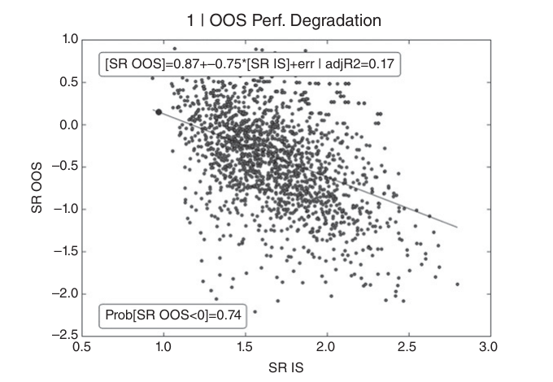
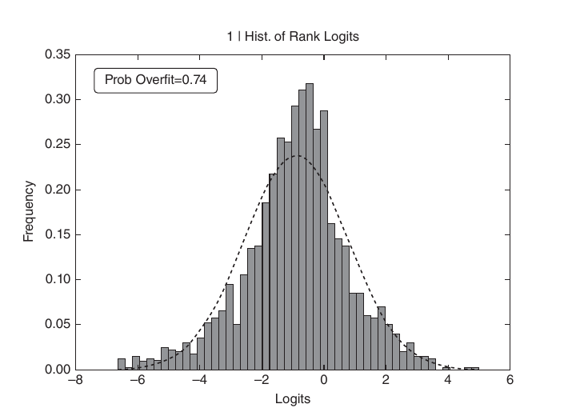

第三部分：回测
回测的风险
11.1 研究动机
回测是量化从业者最重要却也最容易被误解的技术之一。一种常见的误区是将回测视为研究工具。把研究与回测混为一谈，就如同酒后驾车。切勿在回测结果的影响下开展研究。学术期刊上发表的大多数回测存在缺陷，究其根源，是对多次检验进行选择性筛选所导致的偏差（Bailey、Borwein、López de Prado 与 Zhu [2014]；Harvey 等 [2016]）。若要列举人们在回测过程中所犯的各类错误，足以写成一本专著。本人或许是在回测1 及投资绩效指标领域发表期刊论文数量最多的学术作者，但即便如此，我也自感难以将过去 20 年间所见的各类错误悉数整理成册。本章并非回测速成教程，而是对即便是经验丰富的专业人士也容易犯下的若干常见错误的简要梳理。
11.2 不可能的任务：无懈可击的回测
从最狭义的定义来看，回测是对某一策略在过去特定时期内运行情况的历史模拟。因此，它本质上是一种假设推演，而非严格意义上的实验。在劳伦斯伯克利国家实验室等物理学实验室中，我们可以在控制环境变量的条件下重复实验，从而推导出精确的因果关系。相比之下，回测既非实验，也无法证明任何结论。回测不能保证任何结果，即便是乘坐改装版 DeLorean DMC-12 穿越回过去，也未必能实现那个夏普比率（Bailey 与 López de Prado [2012]）。随机抽取的路径将有所不同。历史不会简单重演。
回测的意义何在？它是对一系列变量的合理性验证，包括下注规模、换手率、对成本的抵御能力以及特定情景下的表现。一次好的回测极具参考价值，但做好回测极为困难。2014年，德意志银行一支由 Yin Luo 领导的量化团队发表了一篇题为"量化投资的七宗罪"的研究报告（Luo et al. [2014]）。这是一篇图文并茂、通俗易懂的文章，我建议从事这一行的每个人都认真阅读。文中，该团队提到了以下几类常见问题：
- 幸存者偏差：以当前投资标的池作为回测范围，忽视了部分公司已经破产、部分证券已经退市的事实。
- 前瞻偏差：使用在模拟决策时点尚未公开的信息。务必确认每个数据点的时间戳，并充分考虑发布日期、分发延迟以及回填修正等因素。
- 事后编故事：在观察到某种随机规律后，事后编造叙事为其背书。
- 数据挖掘与数据窥探：在测试集上训练模型。
- 交易成本：模拟交易成本十分困难，因为确认该成本的唯一方式是与交易账簿进行实际交互（即，实际完成该笔交易）。
- 离群值：将策略建立在少数极端历史结果之上，而这些结果在未来可能永远不会重现。
- 做空：对现货产品进行做空操作需要找到出借方。借券成本和可借数量通常无法事先确知，且取决于各方关系、库存、相对需求等因素。
以上仅是大多数期刊论文中常规出现的几类基本错误。其他常见错误还包括：使用非标准方法计算绩效（第14章）；忽视隐性风险；只关注收益而忽略其他指标；混淆相关性与因果性；选取不具代表性的时间段；未能预见突发情况；忽视强制平仓限额或追加保证金要求；忽视融资成本；以及忽略实操层面的因素（Sarfati [2015]）。类似错误不胜枚举，但实际上逐一列举并无太大意义，原因正如下一节标题所揭示的那样。
11.3 即便你的回测无懈可击，它也很可能是错的
恭喜！你的回测无懈可击——任何人都能复现你的结果，你的假设保守到连上司也无可挑剔。你为每笔交易支付了任何人所能要求的两倍以上的成本。你在信息已被全球半数人知晓数小时后才执行，且成交量参与率低得离谱。尽管存在这些极其严苛的
成本，你的回测依然能赚到大量利润。然而，这个无懈可击的回测很可能是错的。为什么？因为只有专家才能做出无懈可击的回测。成为专家意味着你多年来已经运行了数以万计的回测。由此可知，这并非你做出的第一个回测，因此我们需要考虑这可能是一个伪发现——在同一数据集上反复测试后必然会出现的统计巧合。回测令人抓狂之处在于：你越精通此道，伪发现出现的可能性就越大。初学者容易犯 Luo 等人所列的七宗罪， [2014] （实际上还有更多，但谁在计较呢？）。专业人士或许能做出无懈可击的回测，却仍难逃多重检验、选择性偏差或回测过拟合的陷阱（Bailey 和 López de Prado [2014b]).
11.4 回测不是研究工具
第 8 章 讨论了替代效应、联合效应、遮蔽效应、MDI、MDA、SFI、并行特征、堆叠特征等。即便某些特征非常重要，也不意味着它们能通过投资策略变现。反之，有大量策略看似盈利，却是建立在无关特征之上。特征重要性是真正的研究工具，因为它帮助我们理解 ML 算法所发现的模式的本质，而与其能否变现无关。关键在于，特征重要性是事前（ex-ante）得出的，在模拟历史表现之前就已确定。相比之下，回测并非研究工具。它几乎无法告诉我们某一策略为何能赚钱。正如彩票中奖者可能觉得自己的好运理所应当，事后总有一番说辞（Luo 七宗罪之第三宗）。研究者声称发现了数百个"阿尔法"和"因子"，并总能给出一些牵强的解释。但他们实际找到的，不过是上一局碰巧中奖的彩票。中奖者已经兑现，那些号码对下一轮毫无用处。如果你不会为那些彩票多付一分钱，又为何在乎那数百个阿尔法呢？这些研究者从不告诉我们总共卖出了多少彩票，也就是找到这些"幸运"阿尔法所耗费的数百万次模拟。
回测的目的是淘汰不良模型，而非改进模型。根据回测结果调整模型是浪费时间……而且是危险的。应将时间和精力投入到使各个组件臻于完善，正如本书其他章节所讨论的：结构化数据、标签化、加权、集成、交叉验证、特征重要性、下注规模等。等到进行回测时，已经太晚了。在模型完全确定之前，切勿进行回测。如果回测失败，则从头开始。如此操作后，发现伪发现的概率将大幅降低，但仍不会归零。
11.5 若干通用建议
回测过拟合可定义为在多次回测上产生的选择偏差。当一个策略通过以下方式被开发为在回测中表现良好时，就会发生回测过拟合：
对随机历史规律进行变现。由于这些随机规律在未来不太可能重现，如此开发出的策略将会失败。每一个经过回测的策略在一定程度上都因"选择偏差"而存在过拟合：大多数人分享的回测，仅是那些展示出所谓盈利投资策略的回测。如何应对回测过拟合，可以说是量化金融中最根本的问题。原因何在？因为如果这一问题有简单的答案，投资机构便能确定地实现高绩效，因为它们只会投资于经过验证的盈利回测。学术期刊也能够自信地判断某一策略是否可能为伪阳性。金融学或许能够在波普尔和拉卡托斯的意义上成为一门真正的科学（López de Prado [2017]）。使回测过拟合如此难以评估的原因在于：在同一数据集上每进行一次新的检验，伪阳性的概率就会随之变化，而这一信息要么不为研究者所知，要么未与投资者或审稿人共享。虽然没有简单的方法可以防止过拟合，但以下若干步骤有助于减少其出现。
- 针对整个资产类别或投资域开发模型，而非针对特定证券（第 8 章）。投资者注重分散化，因此他们不会仅在证券 Y 上犯错误 X。如果你仅在证券 Y 上发现错误 X，无论其表面上多么有利可图，这很可能是一个伪发现。
- 采用 bagging（第 6 章）作为既能防止过拟合、又能降低预测误差方差的手段。如果 bagging 使策略性能下降，则该策略很可能对少量观测值或异常值存在过拟合。
- 在所有研究完成之前（第 1 至 10 章），不要进行回测。
- 记录在某一数据集上所进行的每一次回测，以便对最终所选结果估计回测过拟合概率（参见 Bailey、Borwein、López de Prado 与 Zhu [2017a] 及第 14 章），并根据已执行的试验次数对夏普比率进行适当缩减（Bailey 与 López de Prado [2014b]).
- 模拟情景，而非还原历史（第 12 章）。标准回测是对历史的模拟，极易发生过拟合。历史只是已实现的随机路径，其走势本可完全不同。你的策略应在大量情景下均能盈利，而不仅仅是在这一条偶然发生的历史路径上。对成千上万个"假设"情景的结果进行过拟合，要困难得多。
- 若回测未能识别出有利可图的策略，请从头开始。抵制复用这些结果的诱惑，遵循回测第二定律。
边研究边回测，如同边喝酒边开车。
不要在回测的影响下进行研究。
Marcos López de Prado， 金融机器学习进阶 (2018)
11.6 策略选择
在第 7 章中，我们探讨了标签中序列条件性的存在如何使标准 k 折交叉验证失效——因为随机抽样会将冗余观测值散布到训练集和测试集中。我们必须寻找一种真正的样本外验证方法：该方法应在与训练模型所用观测值最不可能相关或冗余的观测值上对模型进行评估。参见 Arlot 与 Celisse [2010] 的综述。
Scikit-learn 实现了一种滚动前推（WF）时间折叠方法。在此方法下，测试沿时间方向向前推进，目的在于防止信息泄漏。这与历史回测和实盘交易的操作方式相一致。然而，当存在长程序列依赖时，仅将测试观测值置于训练集末尾之后一个点，可能不足以避免信息泄漏。我们将在第 12 章第 12.2 节重新探讨这一问题。
滚动前推（WF）方法的一个缺点是容易产生过拟合。原因在于，若缺乏随机抽样，测试只存在一条固定路径，可以反复重复直至出现假阳性。与标准的 CV 类似，需要引入一定的随机化，以避免此类绩效靶向或回测过拟合，同时防止与训练集相关的样本泄漏至测试集。接下来，我们将介绍一种基于回测过拟合概率（PBO）估计的 CV 策略选择方法。关于回测的 CV 方法，将留至第 12 章加以说明。
Bailey 等人 [2017a] 通过组合式清除交叉验证（CPCV）方法估计 PBO。该过程示意如下。
第一步，我们构建矩阵 \(M\) ，方法是收集来自 \(N\) 次试验的绩效序列。具体而言，每一列 \(n=1,\ldots,N\) 表示 PnL 关于 \(t=1,\ldots,T\) 与研究者所尝试的某一特定模型配置相关联的观测值的向量。 \(M\) 因此是一个阶数为 \(T\times N\)的实值矩阵。我们所施加的唯一条件为：（1） \(M\) 是真实矩阵，每列行数相同，且每行观测值在所有 \(N\) 次试验间保持同步；以及（2）用于选择最优策略的绩效评估指标可在每列的子样本上进行估计。例如，若该指标为夏普比率，则假设 IID 正态分布假设在所报绩效的各切片上均成立。若不同模型配置以不同频率交易，则将观测值聚合以匹配公共索引 \(t=1,\ldots,T\).
第二步，我们将 \(M\) 按行划分为偶数 \(S\) 个等维度的不相交子矩阵。其中每个子矩阵 \(M_s\)，其中 \(s=1,\ldots,S\)，其阶数为 \((T/S)\times N\).
第三步，我们构建 \(C_S\) 中的元素 \(M_s\)，每组取 \(S/2\)个。组合总数为
例如，如果 \(S=16\)，我们将形成12,780个组合。每个组合 \(c\in C_S\) 由以下部分组成 \(S/2\) 子矩阵 \(M_s\)。第四，对于每个组合 \(c\in C_S\)，我们：
- 构建训练集 \(J\)：合并 \(S/2\) 个子矩阵 \(M_s\)，这些子矩阵构成 \(c\)。\(J\) 是阶数为 \((T/S)(S/2)\times N=(T/2)\times N\) 的矩阵。
- 构建测试集 \(\bar J\)：它是 \(J\) 在 \(M\) 中的补集。换言之，\(\bar J\) 是阶数为 \((T/2)\times N\) 的矩阵，由 \(M\) 中所有不属于 \(J\) 的行构成。
- 构建向量 \(R\)，即阶数为 \(N\) 的绩效统计量，其中第 \(n\) 项 \(R\) 报告与第 \(n\) 列相关的绩效，该列来自 \(J\)（训练集）。
- 确定元素 \(n^*\) ，使得 \(R_n\le R_{n^*},\ \forall n=1,\ldots,N\)。换言之， \(n^*=\arg\max_n\{R_n\}\).
- 构建向量 \(\bar R\)，即阶数为 \(N\) 的绩效统计量，其中第 \(n\) 项 \(\bar R\) 报告与第 \(n\) 列相关的绩效，该列来自 \(\bar J\)（测试集）。
- 确定 \(\bar R_{n^*}\) 在 \(\bar R\) 中的相对排名。我们将此相对排名记为 \(\bar\omega_c\)，其中 \(\bar\omega_c\in(0,1)\)。这是与样本内（IS）所选试验相关的样本外（OOS）绩效的相对排名。若策略优化过程不存在过拟合，我们应观察到 \(\bar R_{n^*}\) 系统性地优于 \(\bar R\) OOS，正如 \(R_{n^*}\) 优于 \(R\) IS。
- 定义 logit \(\lambda_c=\log\left[\frac{\bar\omega_c}{1-\bar\omega_c}\right]\)。这具有如下性质： \(\lambda_c=0\) 当 \(\bar R_{n^*}\) 与 \(\bar R\) 的中位数重合时。较高的 logit 值意味着 IS 与 OOS 表现之间具有一致性，表明回测过拟合程度较低。
第五步，收集所有 \(\lambda_c\)，其中 \(c\in C_S\)，以计算 OOS 排名分布。随后将概率分布函数 \(f(\lambda)\) 估计为 \(\lambda\) 在所有 \(C_S\) 个组合中出现的相对频率，其中
PBO 是与 IS 最优策略在 OOS 上表现不佳相关的概率。图 11.1 的横轴显示所选最佳策略的样本内夏普比率 IS，纵轴显示同一最佳策略的样本外夏普比率 OOS。受回测过拟合影响，策略表现呈现显著且持续的衰退。应用上述算法，可推导出与该策略选择过程相关的 PBO，如图 11.2 所示。每个子集中的观测值保持原始时间顺序；随机抽样在相对不相关的子集上进行，而非直接对观测值进行抽样。参见 Bailey et al. [2017a] 以获取对本方法论准确性的实验分析。


脚注
参考文献
- Arlot, S. and A. Celisse (2010): “A survey of cross-validation procedures for model selection.” Statistics Surveys, Vol. 4, pp. 40–79.
- Bailey, D., J. Borwein, M. López de Prado, and J. Zhu (2014): “Pseudo-mathematics and financial charlatanism: The effects of backtest overfitting on out-of-sample performance.” Notices of the American Mathematical Society, Vol. 61, No. 5 (May), pp. 458–471. Available at https://ssrn.com/abstract=2308659.
- Bailey, D., J. Borwein, M. López de Prado, and J. Zhu (2017a): “The probability of backtest overfitting.” Journal of Computational Finance, Vol. 20, No. 4, pp. 39–70. Available at http://ssrn.com/abstract=2326253.
- Bailey, D. and M. López de Prado (2012): “The Sharpe ratio efficient frontier.” Journal of Risk, Vol. 15, No. 2 (Winter). Available at https://ssrn.com/abstract=1821643.
- Bailey, D. and M. López de Prado (2014b): “The deflated Sharpe ratio: Correcting for selection bias, backtest overfitting and non-normality.” Journal of Portfolio Management, Vol. 40, No. 5, pp. 94–107. Available at https://ssrn.com/abstract=2460551.
- Harvey, C., Y. Liu, and H. Zhu (2016): “. . . and the cross-section of expected returns.” Review of Financial Studies, Vol. 29, No. 1, pp. 5–68.
- López de Prado, M. (2017): “Finance as an industrial science.” Journal of Portfolio Management, Vol. 43, No. 4, pp. 5–9. Available at http://www.iijournals.com/doi/pdfplus/10.3905/jpm.2017.43.4.005.
- Luo, Y., M. Alvarez, S. Wang, J. Jussa, A. Wang, and G. Rohal (2014): “Seven sins of quantitative investing.” White paper, Deutsche Bank Markets Research, September 8.
- Sarfati, O. (2015): “Backtesting: A practitioner’s guide to assessing strategies and avoiding pitfalls.” Citi Equity Derivatives. CBOE 2015 Risk Management Conference. Available at https://www.cboe.com/rmc/2015/olivier-pdf-Backtesting-Full.pdf.
参考书目
- Bailey, D., J. Borwein, and M. López de Prado (2016): “Stock portfolio design and backtest overfitting.” Journal of Investment Management, Vol. 15, No. 1, pp. 1–13. Available at https://ssrn.com/abstract=2739335.
- Bailey, D., J. Borwein, M. López de Prado, A. Salehipour, and J. Zhu (2016): “Backtest overfitting in financial markets.” Automated Trader, Vol. 39. Available at https://ssrn.com/abstract=2731886.
- Bailey, D., J. Borwein, M. López de Prado, and J. Zhu (2017b): “Mathematical appendices to: ‘The probability of backtest overfitting.’” Journal of Computational Finance (Risk Journals), Vol. 20, No. 4. Available at https://ssrn.com/abstract=2568435.
- Bailey, D., J. Borwein, A. Salehipour, and M. López de Prado (2017): “Evaluation and ranking of market forecasters.” Journal of Investment Management, forthcoming. Available at https://ssrn.com/abstract=2944853.
- Bailey, D., J. Borwein, A. Salehipour, M. López de Prado, and J. Zhu (2015): “Online tools for demonstration of backtest overfitting.” Working paper. Available at https://ssrn.com/abstract=2597421.
- Bailey, D., S. Ger, M. López de Prado, A. Sim and, K. Wu (2016): “Statistical overfitting and backtest performance.” In Risk-Based and Factor Investing, Quantitative Finance Elsevier. Available at https://ssrn.com/abstract=2507040.
- Bailey, D. and M. López de Prado (2014a): “Stop-outs under serial correlation and ‘the triple penance rule.’” Journal of Risk, Vol. 18, No. 2, pp. 61–93. Available at https://ssrn.com/abstract=2201302.
- Bailey, D. and M. López de Prado (2015): “Mathematical appendices to: ‘Stop-outs under serial correlation.’” Journal of Risk, Vol. 18, No. 2. Available at https://ssrn.com/abstract=2511599.
- Bailey, D., M. López de Prado, and E. del Pozo (2013): “The strategy approval decision: A Sharpe ratio indifference curve approach.” Algorithmic Finance, Vol. 2, No. 1, pp. 99–109. Available at https://ssrn.com/abstract=2003638.
- Carr, P. and M. López de Prado (2014): “Determining optimal trading rules without backtesting.” Working paper. Available at https://ssrn.com/abstract=2658641.
- López de Prado, M. (2012a): “Portfolio oversight: An evolutionary approach.” Lecture at Cornell University. Available at https://ssrn.com/abstract=2172468.
- López de Prado, M. (2012b): “The sharp razor: Performance evaluation with non-normal returns.” Lecture at Cornell University. Available at https://ssrn.com/abstract=2150879.
- López de Prado, M. (2013): “What to look for in a backtest.” Lecture at Cornell University. Available at https://ssrn.com/abstract=2308682.
- López de Prado, M. (2014a): “Optimal trading rules without backtesting.” Lecture at Cornell University. Available at https://ssrn.com/abstract=2502613.
- López de Prado, M. (2014b): “Deflating the Sharpe ratio.” Lecture at Cornell University. Available at https://ssrn.com/abstract=2465675.
- López de Prado, M. (2015a): “Quantitative meta-strategies.” Practical Applications, Institutional Investor Journals, Vol. 2, No. 3, pp. 1–3. Available at https://ssrn.com/abstract=2547325.
- López de Prado, M. (2015b): “The Future of empirical finance.” Journal of Portfolio Management, Vol. 41, No. 4, pp. 140–144. Available at https://ssrn.com/abstract=2609734.
- López de Prado, M. (2015c): “Backtesting.” Lecture at Cornell University. Available at https://ssrn.com/abstract=2606462.
- López de Prado, M. (2015d): “Recent trends in empirical finance.” Journal of Portfolio Management, Vol. 41, No. 4, pp. 29–33. Available at https://ssrn.com/abstract=2638760.
- López de Prado, M. (2015e): “Why most empirical discoveries in finance are likely wrong, and what can be done about it.” Lecture at University of Pennsylvania. Available at https://ssrn.com/abstract=2599105.
- López de Prado, M. (2015f): “Advances in quantitative meta-strategies.” Lecture at Cornell University. Available at https://ssrn.com/abstract=2604812.
- López de Prado, M. (2016): “Building diversified portfolios that outperform out-of-sample.” Journal of Portfolio Management, Vol. 42, No. 4, pp. 59–69. Available at https://ssrn.com/abstract=2708678.
- López de Prado, M. and M. Foreman (2014): “A mixture of Gaussians approach to mathematical portfolio oversight: The EF3M algorithm.” Quantitative Finance, Vol. 14, No. 5, pp. 913–930. Available at https://ssrn.com/abstract=1931734.
- López de Prado, M. and A. Peijan (2004): “Measuring loss potential of hedge fund strategies.” Journal of Alternative Investments, Vol. 7, No. 1, pp. 7–31, Summer 2004. Available at https://ssrn.com/abstract=641702.
- López de Prado, M., R. Vince, and J. Zhu (2015): “Risk adjusted growth portfolio in a finite investment horizon.” Lecture at Cornell University. Available at https://ssrn.com/abstract=2624329.